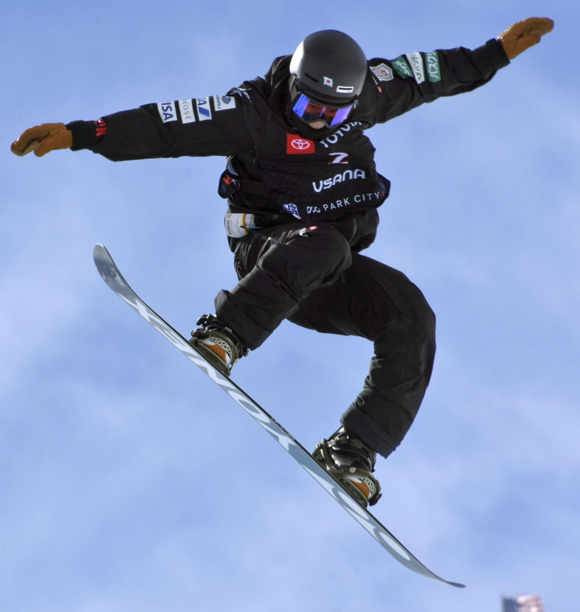

Target Audience description
The target audience for boarderweather.com will be boarders from every place who want to ride the board (snowboard or skateboard) in one of the three towns and want to know how is the weather in that town and what are the events.
Personas
Ryan smith
- Age: 30 Years old.
- Income: $3000.
- Education: Attending graduate school in biology.
- Family Status: Married with no kids.
- Experience: Ryan is a Snowboarder since he was a teenage.
- Device: Most of the time, Ryan access the internet through his Iphone.
Rebeca Salles
- Age: 13 Years old.
- Income: $50 Allowance.
- Education: Middle school student.
- Family Status: lives with her parents and siblings.
- Experience: Started skateboard 1 year ago.
- Device: Most of the time, Rebecca access the internet through her Iphone.
Scenarios
- Why is boardweather important?
- Who won the street League?
- What are the skateboard/snowboard related news and events?
- I need a place to skateboard when it is rainning.
- What's the weather going to be this weekend at the park I'm planing to ride?
Content
1.Why is boardweather important?
By accessing the boardweather, the user will be able to check the weather condition in the listed town and if it will be possible to ride the board. They also will be able to check if there will be any event in the Town. By checking the boarderweather, it will prevent wasted trip to the town.
2.Who won the Street League?
When accessing the Boarder Weather, they will find the information about the street league and a link to the official website of the Street League Skateboarding.
3.What are the skateboard/snowboard related news and events?
There will be a section with events that will take place in the respective Town.
4.I need a place to skateboard when it is rainning.
Visitors will find a section with good spots to skateboard when it is rainning.
5.What's the weather going to be this weekend at the park I'm planing to ride?
Since the main purpose of the site is to provide information about the weather condition, they will find the information they want related to the park they want to ride.